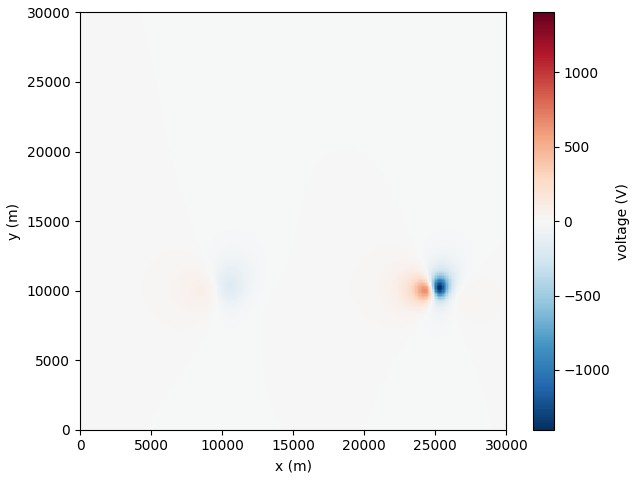

Note
Click here to download the full example code
Magnetic field data analysis using pyDEXP: a 2-sources case
This code shows a step-by-step processing of potential field imaging aiming at giving an estimate of magnetic sources positions and depth using the dEXP tranformation method.
dEXP method implementation from Fedi et al. 2012.
Calculations used dEXP, while plotting use the plot_dEXP module.
The model data was created using geometric objects from fatiando.mesher. The forward simulation of the data was done using fatiando.gravmag module.
- Sources locations:
S_{A} = [10e3,10e3,2e3] # xyz coordinates
S_{B} = [25e3,10e3,1e3]
- Sources properties:
radius = 1.5e3
inc = 50
dec = -30
Note
This is part of a larger project aiming at inverting current sources density (see more at: https://icsd-dev.readthedocs.io/en/latest/)
References
Uieda, L., V. C. Oliveira Jr, and V. C. F. Barbosa (2013), Modeling the Earth with Fatiando a Terra, Proceedings of the 12th Python in Science Conference, pp. 91 - 98.
Uieda, L. (2018). Verde: Processing and gridding spatial data using Green’s functions. Journal of Open Source Software, 3(29), 957. doi:10.21105/joss.00957
Fedi, M., and M. Pilkington (2012), Understanding imaging methods for potential field data, Geophysics, 77(1), G13, doi:10.1190/geo2011-0078.1
import matplotlib.pyplot as plt
import numpy as np
import lib.dEXP as dEXP
from lib.dEXP import _fit
import lib.plot_dEXP as pEXP
import lib.set_parameters as para
import examples.magnetic.fwdmag.fwd_mag_sphere as magfwd
Create a model using geometric objects from fatiando.mesher
xp, yp, zp, U, shape, p1, p2, coord= magfwd.load_mag_synthetic()
max_elevation=2*max(coord[:,2])
scaled, SI, zp, qorder, nlay, minAlt_ridge, maxAlt_ridge = para.set_par(shape=shape,max_elevation=max_elevation)
interp = True
x_axis= 'y'
qorder = 0
Out:
/home/ben/Documents/GitHub/BenjMy/dEXP_imaging/examples/magnetic/fwdmag/fwd_mag_sphere.py:60: MatplotlibDeprecationWarning: shading='flat' when X and Y have the same dimensions as C is deprecated since 3.3. Either specify the corners of the quadrilaterals with X and Y, or pass shading='auto', 'nearest' or 'gouraud', or set rcParams['pcolor.shading']. This will become an error two minor releases later.
plot = ax.pcolormesh(X, Y, data.reshape(shape), cmap='RdBu_r',
Plot field data over a 2d line crossing the anomalies
pEXP.plot_line(xp, yp, U,p1,p2, interp=True, Xaxis=x_axis)
pEXP.plot_field(xp, yp, U, shape)
- 
Out:
/home/ben/Documents/GitHub/BenjMy/dEXP_imaging/lib/plot_dEXP.py:39: MatplotlibDeprecationWarning: shading='flat' when X and Y have the same dimensions as C is deprecated since 3.3. Either specify the corners of the quadrilaterals with X and Y, or pass shading='auto', 'nearest' or 'gouraud', or set rcParams['pcolor.shading']. This will become an error two minor releases later.
plot = ax.pcolormesh(
(<AxesSubplot:xlabel='x (m)', ylabel='y (m)'>, <module 'matplotlib.pyplot' from '/home/ben/miniconda3/lib/python3.9/site-packages/matplotlib/pyplot.py'>)
Upward continuation of the field data with discretisation in altitude controlled by the number of layers (nlay) and the maximum elevation desired (max_elevation)
mesh, label_prop = dEXP.upwc(xp, yp, zp, U, shape,
zmin=0, zmax=max_elevation, nlayers=nlay,
qorder=qorder)
# plt, cmap = pEXP.plot_xy(mesh, label=label_prop)
# plt.colorbar(cmap)
plt, cmap = pEXP.plot_xy(mesh, label=label_prop, Xaxis=x_axis, p1p2=np.array([p1, p2]))
plt.colorbar(cmap)
Out:
/home/ben/Documents/GitHub/BenjMy/dEXP_imaging/fatiando/gravmag/transform.py:182: UserWarning: Using 'height' <= 0 means downward continuation, which is known to be unstable.
warnings.warn("Using 'height' <= 0 means downward continuation, " +
need to rotate first?
<matplotlib.colorbar.Colorbar object at 0x7f7f28df8f70>
Ridges identification: plot all extremas obtained via find_peaks function (numpy) for a given altitude dEXP.ridges_minmax_plot(xp, yp, mesh, p1, p2,
label=label_prop, method_peak=’find_peaks’)
dEXP.ridges_minmax_plot(xp, yp, mesh, p1, p2,
label=label_prop,
method_peak='find_peaks',
showfig=True,
interp=True,smooth=True,
Xaxis=x_axis)
Ridges identification at all levels: plot extremas obtained via find_peaks function (numpy) for all 3 types of extremas familly RI, RII and RIII dfI,dfII, dfIII = dEXP.ridges_minmax(xp, yp, mesh, p1, p2,
label=label_prop, method_peak=’find_peaks’)
D = dEXP.ridges_minmax(xp, yp, mesh, p1, p2,
label=label_prop,
method_peak='find_peaks',
qorder=qorder,
interp=True,smooth=True,
fix_peak_nb=2,
returnAmp=True,
showfig=True,
Xaxis=x_axis)
dfI, dfII, dfIII = D[0:3]
hI, hII, hIII = D[3:6]
H = D[3:6]

plot filtered ridges fitted over continuated section
fig = plt.figure()
ax = plt.gca()
pEXP.plot_xy(mesh, label=label_prop, ax=ax) #, ldg=)
pEXP.plot_ridges_harmonic(dfI,dfII,dfIII,ax=ax,label=True)
df_fit = dEXP.fit_ridges(D[0:3], rmvOutliers=True) # fit ridges on filtered data
pEXP.plot_ridges_sources(df_fit, ax=ax, z_max_source=-max_elevation*2,
ridge_type=[0,1,2],ridge_nb=None)

Out:
/home/ben/miniconda3/lib/python3.9/site-packages/scipy/optimize/minpack.py:828: OptimizeWarning: Covariance of the parameters could not be estimated
warnings.warn('Covariance of the parameters could not be estimated',
<AxesSubplot:xlabel='y (m)', ylabel='depth\n(m)'>
filter ridges using a minimum length criterium and and filter for a specific range of altitude dfI_f,dfII_f, dfIII_f = dEXP.filter_ridges(dfI,dfII,dfIII,
1,maxAlt_ridge, minlength=8,rmvNaN=True)
df_f = dfI_f, dfII_f, dfIII_f
D_f = dEXP.filter_ridges(dfI,dfII,dfIII,
minDepth=0,
maxDepth=10000,
minlength=8,
rmvNaN=True,
heights=[hI, hII, hIII])
dfI_f, dfII_f, dfIII_f = D_f[0:3]
hI_f, hII_f, hIII_f = D_f[3:6]
df_f = D_f[0:3]
plot filtered ridges fitted over continuated section
fig = plt.figure()
ax = plt.gca()
# plt, cmap = pEXP.plot_xy(mesh, label=label_prop, Xaxis=x_axis, p1p2=np.array([p1, p2]))
pEXP.plot_xy(mesh, label=label_prop, ax=ax, Xaxis=x_axis, p1p2=np.array([p1, p2]))
pEXP.plot_ridges_harmonic(dfI_f,dfII_f,dfIII_f,ax=ax,label=True)
df_fit = dEXP.fit_ridges(df_f, rmvOutliers=True) # fit ridges on filtered data
# pEXP.plot_ridges_sources(df_fit, ax=ax, z_max_source=-max_elevation*2,
# ridge_type=[0,1,2],ridge_nb=None)
Out:
need to rotate first?
/home/ben/miniconda3/lib/python3.9/site-packages/scipy/optimize/minpack.py:828: OptimizeWarning: Covariance of the parameters could not be estimated
warnings.warn('Covariance of the parameters could not be estimated',
qratio = [1,0]
mesh_dexp, label_dexp = dEXP.dEXP_ratio(xp, yp, zp, U, shape,
zmin=0, zmax=max_elevation, nlayers=nlay,
qorders=qratio)
fig, ax = plt.subplots(figsize=(15,3))
plt, cmap = pEXP.plot_xy(mesh_dexp, label=label_dexp,
markerMax=True,qratio=str(qratio), Vminmax = [0,1e-1],
p1p2=np.array([p1,p2]), ax=ax, Xaxis=x_axis) #, ldg=)
plt.colorbar(cmap)
if x_axis=='y':
plt.scatter(coord[0,0], coord[0,2],marker=(5, 1),c='red')
plt.scatter(coord[1,0], coord[1,2],marker=(5, 1),c='red')
# plt.annotate(str(masses),[easting, upward])
else:
plt.scatter(coord[0,1], coord[0,2],marker=(5, 1),c='red')
plt.scatter(coord[1,1], coord[1,2],marker=(5, 1),c='red')
# plt.annotate(str(masses),[northing, upward])
Out:
/home/ben/Documents/GitHub/BenjMy/dEXP_imaging/fatiando/gravmag/transform.py:182: UserWarning: Using 'height' <= 0 means downward continuation, which is known to be unstable.
warnings.warn("Using 'height' <= 0 means downward continuation, " +
need to rotate first?
Markermax_z=960.0
Markermax_x=14500.0
Total running time of the script: ( 3 minutes 17.539 seconds)